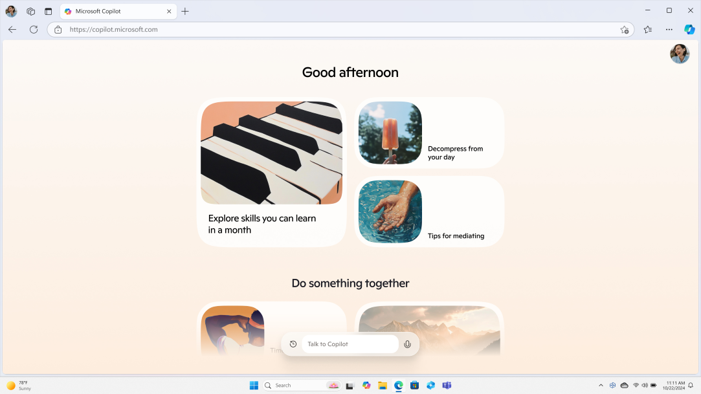

关于 bing AI，你最想问的八件事
把 Copilot 到底是什么、谁该用、怎么进、有哪些坑、隐私安不安全这些问题一次性说清楚，覆盖定位、Edge 集成、图片生成、付费与同类对比。
整理一篇关于 bing AI 的快问快答，直接上干货。
问题一：bing AI 到底是什么？
一句话：它是微软把搜索、大模型和自己全家桶揉在一起做的 AI 助手，底层模型已经升级到 GPT-4o，最大的特点是和 Edge 浏览器及 Microsoft 365 深绑定。
国内用户对它的感受有点分裂——有人把它当 GPT 的平替用，有人觉得它就是一个套了壳的 Bing 搜索。定位其实没那么玄：它既能当纯对话助手回答复杂问题，也能当带联网能力的智能搜索，还能在 Edge 里做页面总结、PDF 批注、地址栏直接生成图片这些传统聊天机器人做不了的事。
问题二：哪些人应该用它？
三类人最值得试试。第一类是已经在用 Edge + Microsoft 365 的用户——AI 直接嵌在浏览器边栏和 Office 套件里，写 Word 时能帮你润色、查资料、生成大纲，不用再切出去开一个独立的 AI 窗口。第二类是对搜索结果质量不满意的人——传统搜索引擎给一堆链接自己找，bing AI 直接把答案整理成一段连贯的话，还附来源。第三类是想玩图片生成但不想装新软件的人——Edge 地址栏里敲几个英文单词，四组图就出来了。
如果你已经有稳定的 ChatGPT 订阅且不依赖浏览器生态，用不用它差异不大。
问题三：怎么打开？需要装什么？
最简单的方式是直接访问bing AI官网，用 Microsoft 账号登录就能用，不装任何客户端也能完整使用所有功能。桌面端体验最好的方式是用 Edge 浏览器——右侧边栏常驻 Copilot 图标，任何网页上点一下就能调用，甚至新标签页可以直接设成 Copilot 模式，打开浏览器就进入对话界面。
移动端 iOS 和 Android 都有独立的 Copilot 应用，从官方下载拿，也可以在手机 Edge 里用。语音输入在移动端是默认显示的，桌面版需要点输入框右下角的麦克风图标触发。
问题四：和 Edge 浏览器集成到底能干嘛？
这是它和其他 AI 助手拉开差距的地方。Edge 把 AI 嵌进了浏览的每一个环节：
- 浏览任何网页时，选中文字右键可以让 AI 解释、翻译、润色；
- 看长文章时，边栏直接让它总结核心观点、列出要点；
- 读 PDF 时，可以让它在 PDF 上批注、围绕内容提问；
- 写邮件时，打开邮件页面让 AI 帮你写一封回复这封邮件的回信；
- 多标签页场景，可以让 AI 对比两个页面的产品参数、总结打开的三个行业报告的共同点。
地址栏也被改造成了半聊天框——输入简单问题直接出答案，输入 "create an image of ..." 直接触发图片生成，输入复杂问题自动跳转到 AI 搜索结果页。Edge 集成的完整技巧可以去bing AI文档翻一下。

问题五：图片生成功能怎么样？
bing AI 内置了完整的文生图能力，2025 年起支持两种底层模型：GPT-4o 图像（照片级真实、文字渲染准）和 DALL-E 3（创意风格强、艺术感好），可以在 Edge 地址栏手动切换。
触发方式非常自然——在对话里说"帮我画一张赛博朋克风格的城市夜景海报"或者"画一只戴着宇航员头盔的柴犬，水彩风格"就会自动调用 Image Creator，一次性生成四组候选图让你选。提示词越具体越好，好的提示词通常包含主体、风格、场景、光照、视角、画幅六个维度。生成后可以保存、分享，也可以让 AI 在这张图的基础上继续修改，比如"把背景换成雪山"。
免费版每天有有限的生成额度，用完需要等额度刷新或者升级 Copilot Pro。
问题六：数据隐私安全吗？
这是很多人犹豫要不要长期用的原因。先讲事实：个人版 Copilot 的对话历史绑定你的 Microsoft 账号，默认自动保存。微软可以使用匿名化的对话数据来改进模型——但这个选项可以在设置里关闭。上传到 Copilot 的文件（PDF、图片、数据文件）仅用于当前对话处理，处理完成后默认不保留原始文件，也不会被用于模型训练（除非你主动开启了数据改进选项）。
降低风险的具体做法：不在 Copilot 里输入密码、银行卡号等敏感信息；医疗、法律、商业机密类内容谨慎使用；定期查看对话历史，删除不需要的记录；Memory 功能记住的个人信息定期审核。
企业版（Copilot for Microsoft 365）的数据处理规则严格得多——对话历史存储在企业自己的租户中，默认不允许微软用企业数据训练模型，完全符合 GDPR、HIPAA 等合规要求，但个人用户一般用不到。
问题七：要不要付费？有免费版吗？
有免费版，日常用完全够。基础版 Copilot 免费，图片生成也有每日免费额度。Copilot Pro 是付费升级，主要提升的地方是图片生成速度更快、额度更高，以及在 Word、Excel、PowerPoint 中解锁更深度的 Copilot 功能。如果你只是聊天、查资料、偶尔生成几张图，免费版足够撑住日常需求。
问题八：值不值得长期用？
值得，但前提是你至少愿意把 Edge 设为常用浏览器之一。纯网页版能用，但体验打了折扣——AI 帮你总结网页内容、批注 PDF、跨标签页对比这些最核心的差异化功能，只有在 Edge 里才完整。
它不是 ChatGPT 的替代品，更像是把 AI 嵌进浏览和办公流程的加速器——用得好的时候，浏览器一开 AI 就在，写东西、查资料、做判断都不用切出去开第二个窗口。如果你本来就用 Edge 和 Office，试试看；如果已经在其他 AI 产品上有稳定的工作流，也没必要特意折腾。这套资料在GitHub、Gitee、GitCode三个仓库都能拿到，国内访问 Gitee 或 GitCode 更顺手。
最后一句：装上 Edge，开一下右侧的 Copilot 边栏，花十分钟逛一圈你常看的网站，自然就知道它对你有没有用。